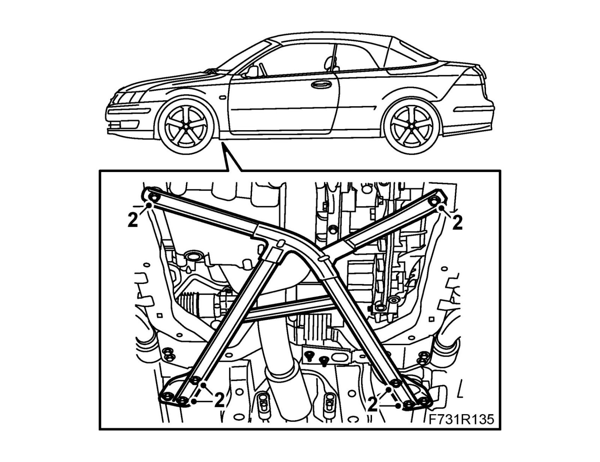

Chassis Reinforcement, Front Subframe, CV
Chassis reinforcement, front subframe, CV, B207To remove
1. Raise the car.
2. Remove the bolts holding the front chassis reinforcement and remove the reinforcement.
Important
The front bolts (of the rear mounting) are shorter than the others.

To fit
1. Position the chassis reinforcement and fit the bolts.
Important
The front bolts (of the rear mounting) are shorter than the others.
Tightening torque 50 Nm (37 lbf ft)
2. Lower the car to the floor.